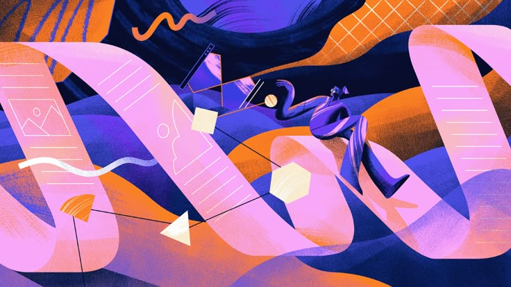
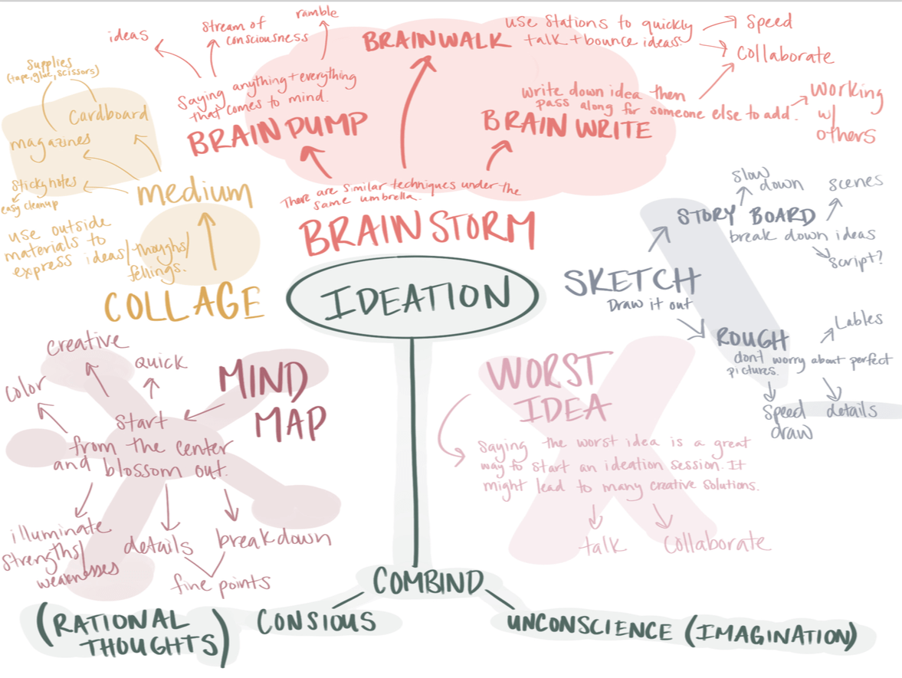
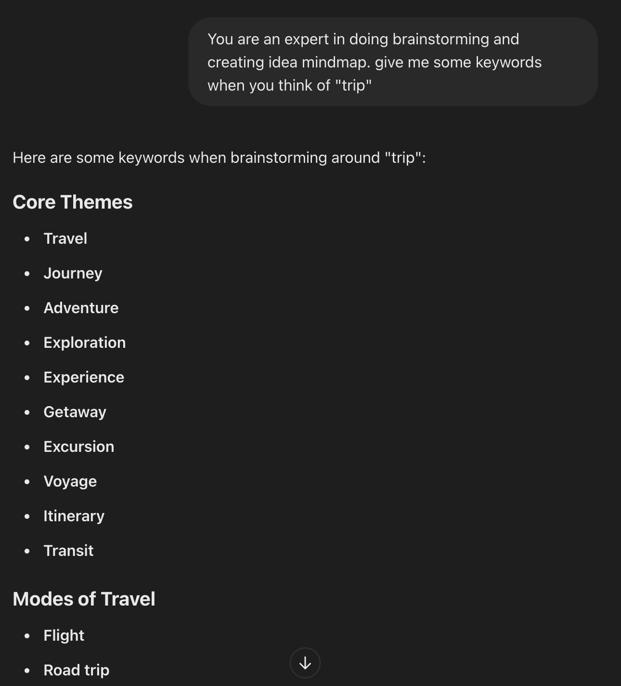
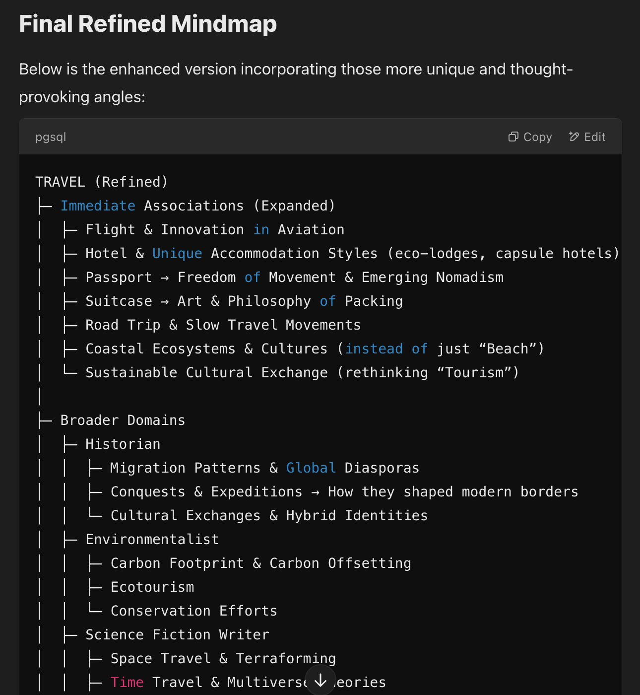

Building on my last post, I compared high-quality human-generated ideas with AI-generated ideas and identified three key areas where standard AI prompting strategies fall short:
- Inability to generate nuanced connections
- Lack of emotional depth and considerations
- Failure to comprehensively account for affordances and constraints
In this post, I’ll take it a step further—analyzing common prompting pitfalls that may lead to low-quality ideation and using those insights to develop solutions that address these three primary weaknesses of LLMs in ideation.

Where AI can go wrong
More often than not, when I throw a prompt into the chat window to ask AI to generate as many high-quality product ideas as possible, the results are not very ideal. Bad AI-generated ideas usually take shape in the following form:
- There’s a lack of diversity, indicated by the fact that 8 out of 10 ideas follow a very similar pattern. “AI-powered” related solutions can be the most common among all. Especially when the conversation goes further with the direction unchanged, new ideas generated become more homogeneous.
- LLMs won’t do much more than combining a few tech buzzwords and form sentences that read well but don’t make much sense in the context of product development. LLMs may come up with ideas that have apparent weaknesses in the implementation stage.
As a result, most of my conversations with ChatGPT have been overly lengthy with limited useful information. While some of the keywords it introduces can be inspiring, much of the content falls into the realm of uninspired, repetitive ideas—things an average person could easily think of.
Given that LLM responses are highly adaptable to prompts, my goal is to use prompt engineering to amplify its strengths in productivity while improving its weakness in diversity, ultimately creating a more effective ideation environment.
Starting with problems
Since there are thousands of ways to talk to an LLM, I decided to modify my prompting strategy based on the problems.
Generate more nuanced connections
Mindmap is by far the most prevalent and effective way for ideation. It’s adopted by a lot of renowned designers such as David M. Kelley and Naoto Fukasawa. The core of creating a mind map lies in building connections—linking ideas, concepts, and themes in a way that fosters structured yet flexible thinking.
In a mind map, ideas emerge from interconnected concepts, forming a web of relationships that guide creative exploration. At first, the process starts with a central theme or problem statement, from which branches extend outward, each representing a related subtopic, attribute, or question. As new connections are made, the combination of different elements leads to unexpected insights—merging disciplines, reframing assumptions, or introducing unconventional perspectives. As the central theme became more divergent, creative ideas are formed from these connections.

However, forming nuanced connections remains a significant challenge for Large Language Models. While LLMs excel at generating surface-level associations or interpreting links between seemingly unrelated concepts, they struggle to create deep, meaningful connections—especially when relying on standard prompting techniques.
Following this track, I decided to change my prompting strategies. After exploration, I have figured out several solutions (in this example, I use “travel” as the central theme):
- Using Chain-Of-Thought(COT) approach to guide LLMs through the steps
We are brainstorming a mindmap around the word ‘travel.’ I want you to follow these steps: 1. Immediate associations (the common ones). 2. Synonyms and related concepts from various domains (literature, pop culture, psychology, technology, etc.). 3. Metaphorical or figurative meanings of ‘travel’ (mental journeys, historical journeys, spiritual journeys). 4. Less obvious connections that might feel unconventional or abstract.
After listing these, please combine them into a structured mindmap that shows the relationships among all these levels.
- Using directed role-play or perspectives
Imagine you are: • A poet writing about the idea of ‘travel’ • A child experiencing travel for the first time • An environmentalist worried about the impact of travel • A historian reflecting on ancient travel routes • A science fiction writer imagining interstellar travel
Please provide the key concepts or phrases each of these personas might bring up. Organize your output into a mindmap format with each persona as a main branch.
- Asking for explanations of each connection
Generate a list of 10 nuanced, less obvious concepts related to ‘travel,’ and explain the connection for each. For instance, if you mention ‘Polaroids,’ explain how it symbolizes instant but ephemeral memories, capturing fleeting moments during travel. Please present these in a mindmap structure with short explanations.
- Using metaphorical and conceptual analogies
Consider ‘travel’ as a metaphor. Think about what traveling represents in art, music, personal growth, technology, and spirituality. For each domain, list nuanced ways ‘travel’ might be understood or expressed. Organize these connections into a mindmap with each domain as a separate branch
- Using constraint-based creative challenges
Brainstorm concepts tied to each sense—what does travel taste like, sound like, etc. For each sense, come up with an associated concept that is intriguing or unconventional. Explain why it’s related.
- Encouraging self-reflection or critique
Generate 15 concepts related to ‘travel.’ Next, pick the top 5 that might seem too generic or superficial, and transform them into more nuanced, interesting connections. Reorganize these refined ideas into a final mindmap.
Results comparison
Using standard prompt strategy, the keywords generated are very generic:

However, after combining the modified prompting strategies, the keywords generated are much more creative and thought-provoking:

In the next post, I’ll work on more prompting strategies to address another problem of LLMs in ideation: lack of emotional depth and considerations.